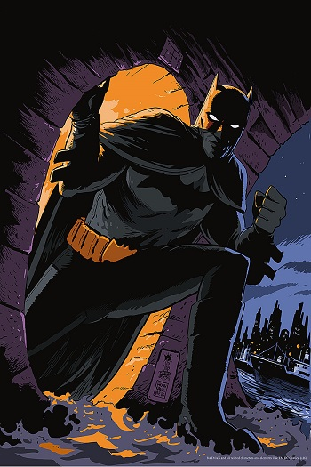
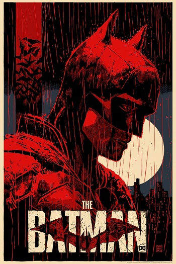
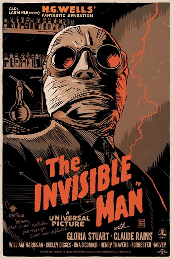

Francesco Francavilla
Francesco Francavilla is an Italian comic book artist known for his creator-owned series The Black Beetle and pulp-inspired comic covers. Other notable works include The Black Coat (which he co-created), Dynamite's Zorro series, and his recent run on Detective Comics with Scott Snyder and Jock.He has worked as an interior artist for both Marvel Comics (Black Panther: The Man without Fear, Captain America and Bucky, Hawkeye) and DC Comics (Detective Comics for The Black Mirror story arc, which won the 2012 Eisner for best ongoing series). Most recently he has been focusing on The Black Beetle, a series he originally created for his Pulp Sunday blog, which is now being published by Dark Horse Comics. This series has already had wide critical acclaim and has been made an ongoing series as a part of Dark Horse Comics' superhero push.


